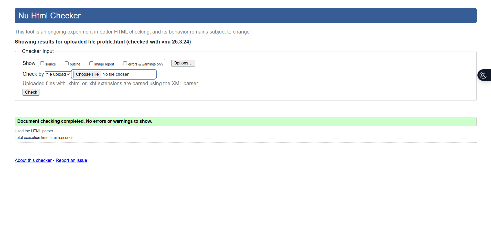
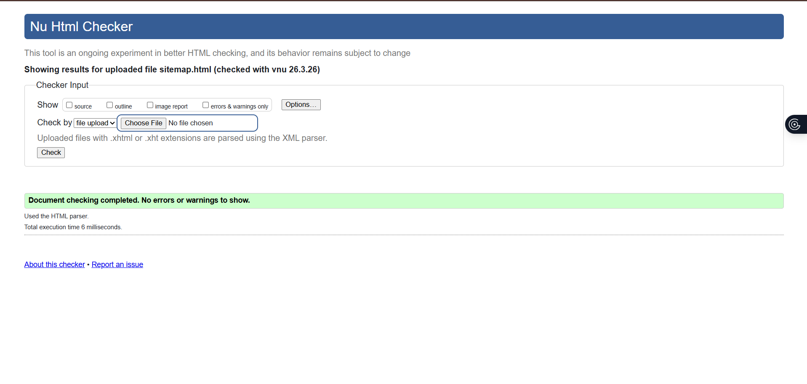
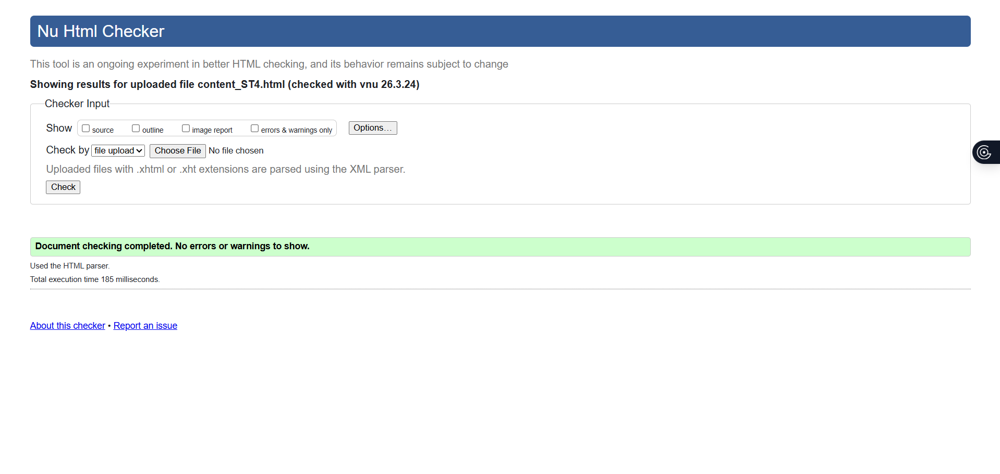

User Profile Page — Validation Report
The User Profile Page (profile.html) was validated using the W3C
HTML Markup Validation Service. The page passed with no errors.
The JavaScript prompt-based profile building interface, DOM manipulation for
progressive profile display, and the progress completion indicator were all
implemented without affecting HTML validity. The profile output area and step
navigation controls were checked for valid markup. The page validated
successfully with no errors.

Back to Page Editor
Sitemap Page — Validation Report
The Sitemap Page (sitemap.html) was validated using the W3C HTML
Markup Validation Service. The page passed with no errors. The
SVG sitemap was validated as inline SVG within the HTML document. All SVG nodes
include accessible <title> elements and clickable links using
<a> tags within the SVG. The viewBox attribute
was verified for responsive scaling. Hover effects implemented via CSS were
checked for valid class usage. The page validated successfully with no errors.

Back to Page Editor
Content Page (ST4) — Validation Report
The Content Page (content_ST4.html) was validated using the W3C
HTML Markup Validation Service. The page passed with no errors.
The heading hierarchy was verified to follow a logical order. All internal anchor
links were checked to correctly target their corresponding section
id attributes. The fixed Go to Top button was validated as a
correctly structured anchor link. All images include valid alt text. The page
validated successfully with no errors.
